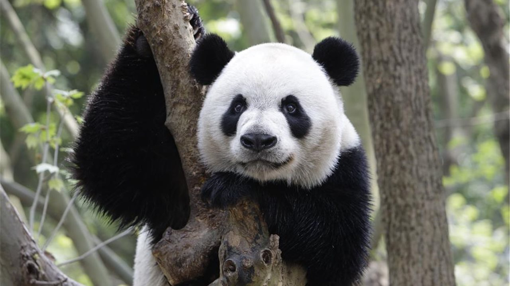

A pesar de ser tan reconocido y de no tener muchos depredadores naturales, los pandas aún están en riesgo. Las graves amenazas ocasionadas por los humanos han reducido a 1,800 la población de pandas en la naturaleza.
Los pandas viven principalmente en bosques de bambú, en lo alto de las montañas del oeste de China, alimento del que subsisten casi por completo. Deben comer entre 26 y 84 libras (12 y 38 kg) de bambú cada día, una increíble labor para la cual usan los
alargados huesos de sus muñecas como si fueran dedos pulgares. Un panda recién nacido mide aproximadamente lo mismo que una barra de mantequilla, alrededor de 1/900 del tamaño de su madre, pero puede llegar a pesar hasta 330 libras (150 kg) en
su etapa adulta. Y, a pesar de su gran tamaño, estos osos son excelentes trepadores de árboles.
PÉRDIDA DE HÁBITAT La región de la cuenca del Yangtsé, en China, donde se encuentra el principal hábitat del panda, es el corazón geográfico y económico de este país en auge. Las carreteras y los ferrocarriles están fragmentando cada vez
más el bosque, aislando las poblaciones de pandas y evitando el apareamiento. La destrucción del bosque también reduce el acceso de los pandas al bambú que necesitan para sobrevivir. El gobierno chino ha establecido más de 50 reservas para los
pandas pero solo alrededor del 61% de la población de pandas del país está protegida por estas reservas.
CAZA FURTIVA La caza continúa siendo una amenaza siempre presente. La caza furtiva de animales por su pelaje ha disminuido debido a estrictas leyes y una mayor conciencia pública sobre el estado de protección del panda. Sin embargo los
cazadores que buscan otros animales en los hábitats del panda continúan matando pandas accidentalmente.